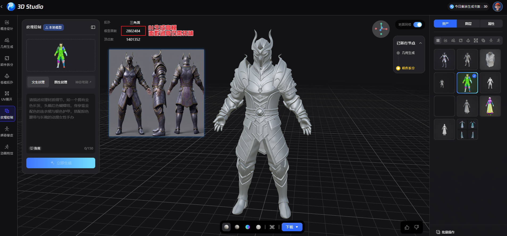
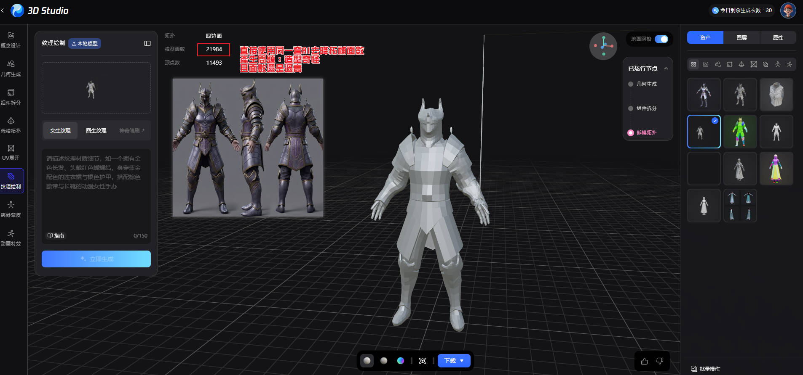
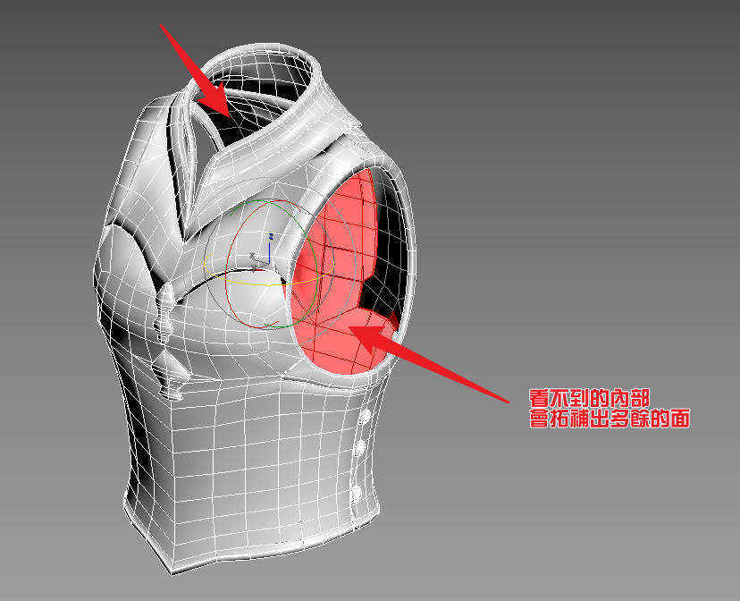
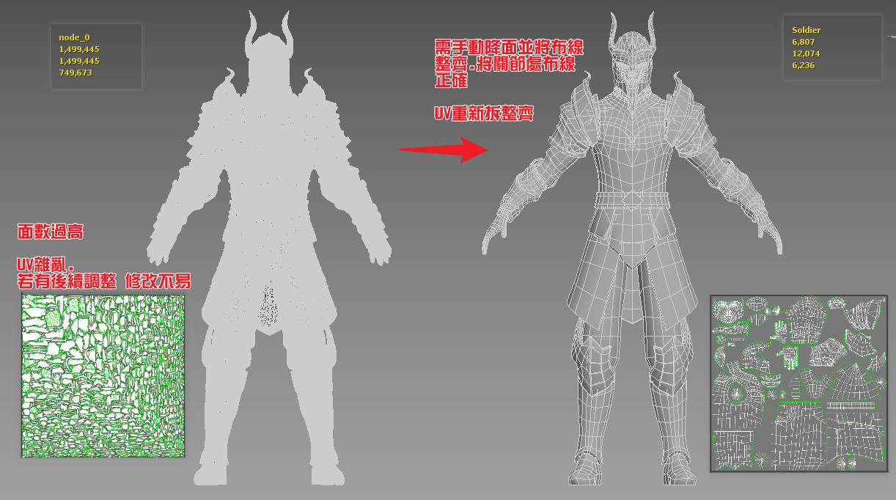
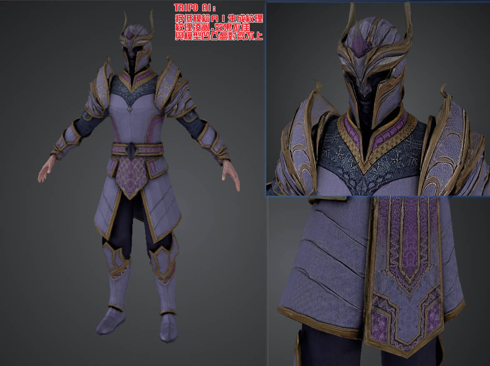
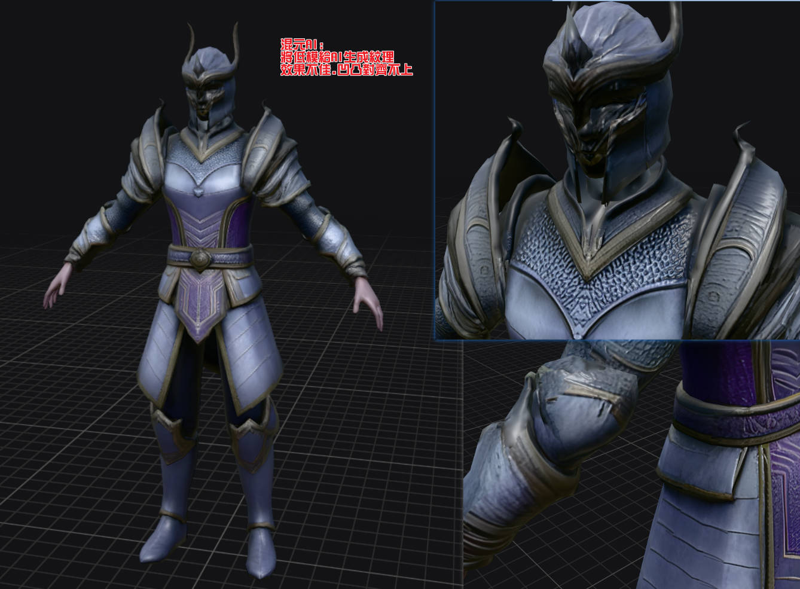

📊 產業現況（2026）
關鍵數據
88% 工作室已使用或計劃使用 AI 36% 從業者每日使用生成式 AI 僅 5% AI 試點進入量產 超過半數報告生產力提升 20%+產業觀察
- Sony — 已在 QA、3D 建模、動畫中使用 AI 自動化重複工作
- GTA 6 — 零生成式 AI（$10-15億開發），代表頂級品質仍靠人工
- GDC 2026 調查 — AI 工具使用率大幅上升
- 原本需要數週的角色概念設計、3D 建模、動畫，現在可在數天內完成
✅ AI 能做到的
【前期製作】
1. 概念設計 / 發想
MidjourneyStable DiffusionDALL-E
- 快速生成大量概念圖（角色、場景、道具）
- 風格探索（一次產出多種風格方向）
- 配色方案、構圖參考
⚡ 效率提升：數天 → 數小時（含篩選修圖時間）
📊 實際完成度：Midjourney 70-80%、SD 60-70%。產出約 40% 可直接用；需生成 10-20 張挑 1-2 張；風格一致性僅 30-40%
2. 貼圖 / 材質生成
Substance 3D SamplerPolyMeshy
- PBR 材質自動生成（金屬、木頭、石頭等）
- 照片轉無縫貼圖
- AI 超解析度放大（低解析度 → 高解析度）（限獨立 2D 素材，角色 UV 貼圖效果差，有接縫問題）
⚡ 通用材質加速明顯，角色材質仍需人工
📊 實際完成度：通用材質 80-90%、角色專屬 40-50%、無縫貼圖 85%、已有UV放大 50-60%
3. 3D 模型快速原型
MeshyTripo AIKaedim
- 文字/圖片 → 3D 模型（粗模）
- 快速產出大量變體供挑選
⚡ 概念到粗模：數天 → 數分鐘（產出初版速度，達量產品質仍需人工精修）
📊 實際完成度：Meshy 30-40%、Tripo 50-60%、形狀參考 90%、直接用於引擎 5-10%。每個需 2-4 小時手動清理
4. 動畫 / 動作
CascadeurDeepMotionNVIDIA Kimodo
- 影片轉動捕（手機拍攝即可）
- AI 補幀（關鍵幀之間自動補間，最多 120 幀）
- 文字描述生成動作
⚡ 不需動捕棚，手機即可產出動作資料
📊 實際完成度：補幀 70-80%、影片轉動捕 55-65%、通用走跑跳 70-80%、特定表演 20-30%、風格化誇張 10-15%
5. 背景 / 環境填充
- 大量重複性資產生成（樹木、石頭、建築變體）
- 地形自動生成
- 天空盒 / HDR 環境圖
⚡ 環境資產批量產出
📊 實際完成度：AI資產 50-60%、地形 70-80%、天空盒/HDR 85-90%
6. UI / 圖標設計
- 快速生成圖標變體
- 風格統一的 UI 元素批量產出
⚡ 圖標設計：逐一繪製 → 批量生成
📊 實際完成度：單個圖標 70%、整套風格統一 30-40%
【後期修改優化】
1. 貼圖升級與修改
Topaz GigapixelStable Diffusion img2imgAdobe Firefly
- 低解析度貼圖 AI 放大（如 512→2048，保持清晰）
- 現有貼圖風格轉換（寫實→卡通、日系→歐美）
- 批量調色 / 統一色調
- 破損/缺失貼圖的 AI 修補（inpainting）
📊 實際完成度：獨立2D放大 85-90%、已綁UV放大 50-60%、批量調色 90-95%
2. 材質重新生成（Retexture）
Meshy RetextureTripo Retexture
- 對現有 3D 模型重新上材質（不改模型）
- 文字描述換皮膚（如「把木頭材質改成金屬」）
- 批量生成同模型的多種配色/材質變體
📊 實際完成度：簡單物件 75-85%、換色換皮 70-80%、複雜角色 5-15%
3. 模型減面 / LOD 生成
InstaLODSimplygon
- 高模自動生成低模（用於遠景/手機版）
- AI 輔助判斷哪些細節可以省略
📊 實際完成度：自動LOD 70-80%、保持輪廓 50-60%、動畫友善減面 30-40%
※ 指專業 LOD 工具（InstaLOD/Simplygon）的演算法減面，非 AI 生成工具的重建式降面。AI 生成工具的降面功能實測可用度為 0%。
4. Normal Map / 細節烘焙
MaterializexNormal + AI
- 高模細節自動烘焙到低模的法線貼圖
- AI 從照片/2D 圖生成 Normal Map
5. 動畫微調與重定向
CascadeurRokoko Retarget
- 現有動作重定向到不同體型角色
- AI 補幀讓動畫更流暢（如 24fps→60fps）
- 動作風格轉換（寫實→誇張卡通）
📊 實際完成度：補幀 75-85%、相似體型重定向 70-80%、差異大體型 40-50%、風格轉換 20-30%
6. 批量處理與變體生成
Scenario API
- 同一資產批量產出顏色/紋理變體
- 場景物件批量替換材質
- 自動生成 sprite sheet 不同角度
- Scenario API 每日可生成 10 萬張圖
7. 即時渲染優化（Runtime）
NVIDIA DLSS
- AI 即時超解析度（低解析度渲染→高解析度輸出）
- AI 降噪（光線追蹤降噪）
- 幀生成（AI 插幀提升 FPS）
📊 AI 參與度總覽
百分比說明：
- AI 產出品質 = AI 直接產出後，成品的可用程度
- 人工修正量 = 人還需要花多少工作量去修正才能達到量產標準
- 實際省時 = 相比完全人工製作，使用 AI 輔助後實際節省的時間比例
三者關係：AI 產出品質高不代表不需要人工，人工修正量才是真正的成本。實際省時 = 最終效益。
| 環節 | AI 產出品質 | 人工修正量 | 實際省時 |
|---|---|---|---|
| 概念設計 | 70-80% | 20-30% 篩選修圖 | 省 50-60% |
| 通用材質 | 80-90% | 10-15% 參數微調 | 省 70-80% |
| 角色貼圖 | 20-30% | 50-60% 風格修正 | 省 10-15% |
| 3D 粗模 | 30-40% | 60-70% 完整 retopo | 省 30-40% |
| 通用動作 | 70-80% | 20-30% 抖動修正 | 省 50-60% |
| 表演動作 | 20-30% | 70-80% 大量手動 | 省 10-15% |
| 背景環境 | 50-60% | 40-50% 風格統一 | 省 30-40% |
| UI 圖標 | 50-60% | 40-50% 向量化統一 | 省 30-40% |
| 貼圖放大(2D) | 85-90% | 5-10% 微調 | 省 80-85% |
| 貼圖放大(UV) | 50-60% | 40-50% 接縫修補 | 省 20-30% |
| 換色/換皮 | 70-80% | 20-30% 品質審核 | 省 60-70% |
| LOD 生成（限專業工具，AI生成工具0%） | 70-80% | 20-30% 品質確認 | 省 60-70% |
| 動畫補幀 | 75-85% | 15-20% 品質審核 | 省 60-70% |
※ 省時計算基準：相比完全從零開始的總工時。AI 提供起點/參考可省去前期摸索時間，但後續精修仍需大量人工。以 3D 模型為例：從零建模 8 小時，用 AI 粗模為基礎 retopo 約 5-6 小時，省時約 30%，但人工仍佔 5-6 小時。
🔑 關鍵數據
- 產業統計：僅 5% 的 AI 試點專案真正進入量產
- Midjourney 概念圖：約 40% 買入率
- AI 3D 模型：100% 需要手動清理才能用於遊戲
- 整體評估：AI 平均產出品質 50-60%，人工仍需介入 40-50%，實際省時約 30-40%（基於提供起點減少從零摸索的時間，非減少精修工作量）
❌ AI 做不到 / 做不好的
前期限制
1. 量產級 3D 模型
AI 生成的拓撲混亂（「義大利麵幾何」），面數不可控，需人工 retopo，UV 展開品質差。
2. 角色 Rigging
骨架綁定、權重繪製仍需手動，特殊體型更難自動化。
3. 風格一致性控制
每次生成結果不同，需大量 LoRA/ControlNet 約束。「差不多但不完全一樣」是最大痛點。
4. 精確設計意圖傳達
AI 無法理解角色個性與情感，越具體的需求越難精準達成。
5. 動畫表演層次
通用動作可以，但「帶個性的走路」「情緒轉折」做不到。
6. 技術美術工作
Shader 編寫、粒子特效、LOD 優化、光照烘焙設定。
7. 最終品質把關
AI 產出需人工審核修正，「最後 20% 的品質」仍是人的工作。
後期限制
1. 精確局部模型修改
「手臂加粗 10%」AI 無法精確控制，改模型 = 重新生成不是編輯。
2. 自動 Retopology 品質不夠
關節處、臉部等需精確佈線的區域仍需手動。
3. UV 展開優化
接縫位置、空間利用率不如手動，不懂動畫變形需求。
4. 骨架權重修正
穿模修正是極度依賴經驗的手動工作。
5. 風格一致的局部修改
AI 傾向重新生成整體，難以只改局部且保持一致。
6. Shader / 特效調整
粒子參數、Shader 節點調整 AI 無法代勞。
7. 動畫情感微調
表演層次的細微調整仍需動畫師手感。
💡 結論與建議
AI 的定位
- 前期 AI 強在「從無到有」— 加速發想、快速原型
- 後期 AI 強在「批量變體 + 加速產出初版」— 換色、放大、LOD
- 人不可取代的 =「精確編輯 + 細節打磨 + 技術實作」
- AI 是很強的「助手」，但還不是能獨立交付的「美術師」
針對街機專案建議
| 階段 | 用 AI | 仍需人工 |
|---|---|---|
| 前期 | 快速產出角色概念圖、場景設計、材質貼圖、動作參考 | 篩選定調、設計意圖 |
| 後期 | 角色換色批量生成、地圖材質變體、動畫補幀、貼圖放大 | 最終 3D 模型、骨架綁定、誇張化動畫、特效、Shader |
工作流建議
| 階段 | AI 角色 | 人的角色 |
|---|---|---|
| 概念期 | 大量生成參考 | 篩選、定調 |
| 原型期 | 快速出粗模/動作 | 確認方向 |
| 製作期 | 通用材質/背景填充（角色材質仍需人工） | 精修、Rig、特效 |
| 優化期 | LOD、放大、補幀 | 權重修正、Shader |
| 收尾期 | 輔助 QA、批量變體 | 最終品質把關 |
🏭 完整美術量產 Pipeline 評估
完整美術量產 Pipeline：圖片 → 模型 → UV → 貼圖 → 綁定 → 權重 → 動作 → 上材質 → 打燈 → 效能優化 → 主管修改 → 交付。以下逐步評估 AI 在每個環節的能力。
1️⃣ 圖片→模型 | ⚠️ 部分可做
- 能從圖片生成 3D 模型（Meshy、Tripo）
- 但拓撲混亂，面數不可控
- 不符合遊戲引擎規格（需手動 retopo）
結論：能產出「參考用粗模」，不能產出「量產級模型」
2️⃣ UV 展開 | ❌ 做不好
- 自動 UV 存在但品質差
- 不懂動畫變形需求（關節處需特殊處理）
- 接縫位置不合理
結論：仍需美術手動處理
3️⃣ 貼圖生成 | ⚠️ 部分可做
- 可根據模型自動生成 PBR 貼圖
- Retexture 功能可用於簡單物件，複雜角色效果差
- 但風格一致性需要 LoRA 訓練約束
結論：簡單物件/通用材質可用，複雜角色需大量人工修正
4️⃣ 自動綁定 | ⚠️ 部分可做
- 標準人形可自動綁定（Mixamo、AccuRIG）
- 非標準體型（風格化角色）效果差
結論：標準體型 OK，特殊造型需手動
5️⃣ 權重優化 | ❌ 做不到
- 自動權重品質有限
- 穿模修正、關節變形優化仍需手動
結論：AI 無法處理
6️⃣ 動作表演生成 | ⚠️ 部分可做
- 通用動作（走、跑、跳）可以生成
- 「參照規格書」的特定表演 AI 無法理解
- 誇張化卡通動作需手動
結論：能產出基礎動作，表演層次需人工
7️⃣ In-Game 上材質 | ❌ 做不到
- 引擎內的材質設定（Shader 參數、通道配置）是技術工作
- AI 不懂 Unity/Unreal 的材質系統
結論：純人工技術工作
8️⃣ 打燈 | ❌ 做不到
- 場景光照設計是藝術+技術的結合
- AI 無法理解「這個場景要什麼氛圍」
結論：純人工
9️⃣ 效能優化 | ⚠️ 部分可做
- LOD 自動生成可以
- 但 Draw Call 優化、合批策略、記憶體管理是工程問題
結論：AI 能輔助減面，但整體優化需工程師
🔟 主管修改→反覆調整 | ❌ 完全做不到
- 「這個感覺不對，再調調」— AI 無法理解主觀反饋
- 精確的局部修改 AI 做不到
- 反覆迭代需要人的判斷力
結論：這是最核心的「人的工作」
📊 總結評估
| 類別 | 數量 | 步驟 |
|---|---|---|
| ✅ AI 能獨立完成 | 0 個 | — |
| ⚠️ AI 能輔助需人工 | 5 個 | 圖片→模型、貼圖、綁定、動作、效能 |
| ❌ AI 做不到 | 5 個 | UV、權重、上材質、打燈、主管修改 |
自動化程度：約 10-20%（以品質達標為前提）
💪 務實做法（AI 該怎麼用）
| 環節 | 做法 | 省時 |
|---|---|---|
| 圖片→粗模 | AI 生成初版，美術 retopo | 30% |
| 貼圖 | AI 生成初版，美術微調 | 50% |
| 綁定 | 標準體型自動綁定，手動修正 | 20% |
| 動作 | AI 基礎動作庫，動畫師調表演 | 40% |
| 變體 | 換色/換皮膚 AI 批量生成 | 80% |
整體效率提升：約 30-40%
⏱️ 時程影響（以街機專案為例）
- 無 AI：需要 2-3 位美術 × 6-9 個月
- 有 AI 輔助：需要 1-2 位美術 × 5-7 個月
- 純 AI 無人：❌ 不可能達到量產品質
最終結論
AI 是「加速器」不是「替代者」。它能讓 1 個人做到原本 2 個人的產出，但不能讓 0 個人做到 1 個人的品質。
⚠️ AI 修改既有模型的實戰問題
以下是實際使用 AI 工具修改既有美術資產時遇到的結構性問題。這些不是「AI 還不夠好」，而是目前技術架構的根本性限制。
問題 1：面數分配極度浪費（無法精準優化）
- 現象：AI 將整個模型「全面均勻切割加倍」，平坦區域多出幾萬個無用多邊形
- 人類做法：臉部/曲面高密度，平坦處低密度，按需分配
- AI 做法：全部均勻切，不懂「哪裡需要細節」
- 根因：3D 生成架構無語意理解能力，不知道「這是臉」「這是裝甲板」
- 後果：暴增硬體負載，引發嚴重掉幀與卡頓
- 解法：AI 產出只當形狀參考，人工用 retopo 工具重新佈線
問題 2：摧毀動畫佈線（Topology 混亂）
- 現象：AI 產生的模型由無規則三角面（Triangle Soup）組成，缺乏 Edge Loops
- 根因：AI mesh 從點雲/體素轉換而來，沒有「邊循環」概念
- 後果：手肘/膝蓋彎曲時嚴重網格交錯與破圖
- 解法：完全重新拓撲，AI 模型只能當「雕塑參考」
- 短期能解決？有改善但離量產還遠
問題 3：破壞骨架綁定（Skin Weights 失效）
- 現象：AI 修改模型後，重組頂點數量，原本綁好的骨架權重直接作廢
- 根因：Skin Weights 是每個頂點對應每根骨骼的影響值，頂點重組 = 映射斷裂
- 後果：播動畫時手腳留在原地，或產生恐怖拉扯
- 解法：頂點數改變 = 必須重新綁定 + 重新刷權重
- 結論：AI 修改模型 = 後續綁定工作全部重來
問題 4：撕裂貼圖接縫（UV Seams 斷層）
- 現象：AI 放大貼圖後，UV island 邊界處顏色/細節對不上，出現明顯十字接縫線
- 根因：AI 超解析度在 2D 空間處理，不知道這張圖是展開的 3D 表面
- 後果：套回模型後接縫處明顯斷裂
- 解法：用 3D 感知工具（Substance Painter）或手動修補接縫
- 結論：純 2D AI 放大不適合有複雜 UV 的角色貼圖
問題 5：貼圖盲目腦補錯誤細節（語意誤判）
- 現象：AI 把模糊的螺絲釘算成花朵，把污漬變成奇怪符號
- 根因：AI「幻覺」問題 — 根據訓練資料猜測，不知道原始設計意圖
- 後果：產生完全不符合角色設定的錯誤材質
- 解法：用 ControlNet + 原始設計圖約束，或美術手動重繪
- 結論：AI 缺乏設計意圖理解，這是根本性限制
📊 問題總結
| 問題 | 根因 | 短期能解決？ |
|---|---|---|
| 均勻面數 | 生成架構無語意理解 | ❌ 需要全新架構 |
| Triangle Soup | 點雲→mesh 轉換本質 | ⚠️ 有改善但離量產遠 |
| 權重失效 | 頂點重組破壞映射 | ❌ 結構性問題 |
| UV 接縫 | 2D 處理不懂 3D 空間 | ⚠️ 需要 3D-aware 工具 |
| 語意誤判 | AI 幻覺/缺乏設計意圖 | ❌ 根本性限制 |
最終結論
AI 修改既有模型 = 拆房子重蓋，不是裝修。
- AI 目前只適合做「不影響拓撲的表面工作」（換色、換材質）
- 任何涉及「改變頂點結構」的操作 → 後續工作全部重來
- 貼圖放大只適合「獨立的 2D 素材」，不適合「已綁定 UV 的角色貼圖」
🔬 實測案例分析
以下為實際使用 AI 3D 工具的測試結果，以同一個盔甲角色為測試對象，驗證 AI 在各環節的真實表現。
案例 1：AI 生成高模 — 3D Studio

- 結果：面數 2,802,484（三角面），頂點 1,401,352
- 問題：面數是遊戲需求的 35-560 倍（手遊 5K-15K / 主機 30K-80K）
- 全是均勻密度三角面，無 edge loop
- 外觀形狀正確，但拓撲完全不可用
結論：只能當雕塑參考，100% 需要重新拓撲。可用度：0%
案例 2：AI 自動降面 — 3D Studio

- 結果：面數降至 21,984（四邊面），頂點 11,493
- 問題：造型嚴重走樣（頭盔變形、身體比例失真）
- 細節全部丟失
- 面的分佈不合理，關節處無 edge loop
- 面數對手遊仍偏高，對主機又缺乏細節
- AI 降面以「單一物件」處理，不會區分內外面
- 看不到的地方（模型內部）仍然保留面，導致面數怎麼降都過高
- 硬降到很低時，造型輪廓已經與原本完全不同

結論：AI 自動降面比不用還糟，不如從零建模。AI 不懂「哪些面是內部不需要的」，也不懂「哪些輪廓必須保留」，所以低模拓撲還是要手動來。可用度：0%
案例 3：AI vs 人工拓撲對比

| AI 產出（左） | 人工重製（右） | |
|---|---|---|
| 面數 | 1,499,445 面 / 749,673 頂點 | 12,074 面 / 6,236 頂點 |
| UV | 完全混亂碎片化（像打碎的玻璃） | 整齊有序，部件清晰分離 |
| 佈線 | 無 edge loop | 關節處有正確 edge loop |
面數差距：AI 150 萬面 vs 人工 12,074 面（差 124 倍）
結論：從 AI 產出到可用，需要完整人工重製流程
案例 4：AI 紋理生成 — Tripo AI

- 結果：整體配色方案尚可（紫金色系）
- 問題：
- 紋理與模型邊緣不對齊（金色邊條歪斜）
- 接縫處明顯斷裂
- 細節位置錯誤（花紋出現在不該出現的地方）
- 手部紋理錯誤（皮膚色與盔甲色混雜）
- AI 不理解「這條邊是盔甲的金邊裝飾」
結論：遠看勉強，近看完全不可用。可用度：5-10%
案例 5：AI 紋理生成 — 混元 AI

- 結果：品質比 Tripo 更差
- 問題：
- 紋理完全無視模型凹凸結構
- 盔甲凸起邊緣上畫了凹陷紋路（物理矛盾）
- 鎖子甲紋理與實際幾何不匹配
- 肩甲紋理方向與模型曲面衝突
- 手臂處明顯接縫斷裂
結論：完全不可用於量產。可用度：0-5%
📊 綜合結論
| 步驟 | 工具 | AI 產出結果 | 可用度 |
|---|---|---|---|
| 高模生成 | 3D Studio | 形狀 OK，280 萬面 | 僅供參考 0% |
| AI 降面 | 3D Studio | 造型走樣，面數仍高 | 不可用 0% |
| 人工重製 | 手動 | 12,074 面，佈線正確 | 量產標準 ✅ |
| 紋理生成 | Tripo AI | 配色尚可，對齊失敗 | 5-10% |
| 紋理生成 | 混元 AI | 凹凸矛盾，接縫斷裂 | 0-5% |
最終結論
- AI 3D 生成：形狀參考價值 ≈ 30%，直接可用度 ≈ 0%
- AI 自動降面：比不用還糟
- AI 紋理生成（對低模）：遠看 20-30%，近看 0-5%
- 從 AI 產出到量產：仍需 80-100% 的人工工作量